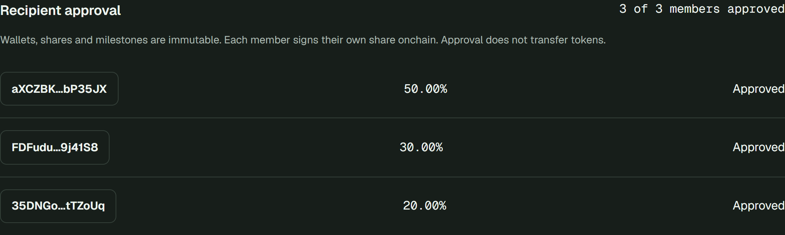
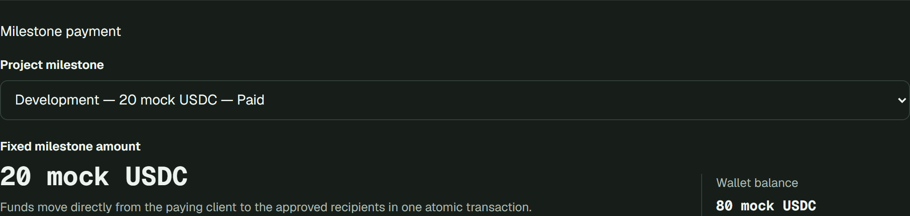
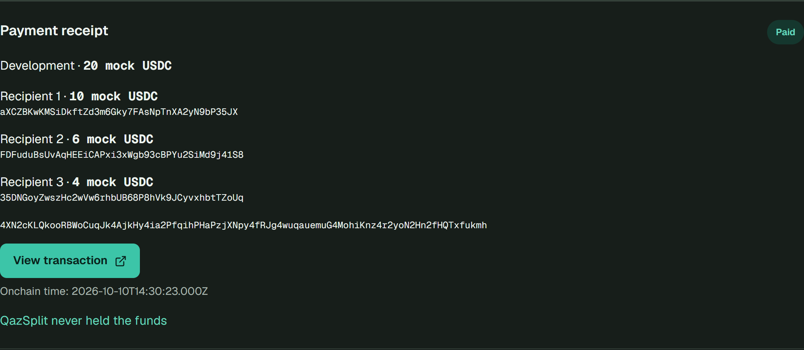
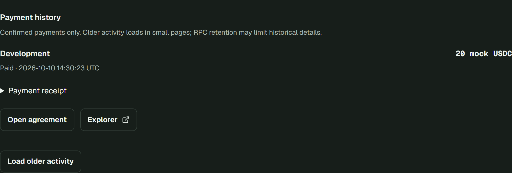

QazSplit / Demo Day
One client.
Everyone paid.
Agree on shares. Pay by milestone. Verify every payout.
Working prototype. No mainnet. No real money.
Problem hypothesis
Who forwards the team's payment?
Developer
Designer
Manager
One project. A shared allocation.
Manual forwarding puts coordination on someone.
Illustrative scenario; customer pain and savings have not been measured.
Our first users / hypothesis
Small teams. Shared project income.
A narrow starting point
- Two to five teammates
- Client-funded project work
- Already comfortable with Solana wallets
Not trying to be
- A bank or fiat on-ramp
- An escrow or dispute service
- A full payroll platform
Intended segment, not an existing customer base. Every participant needs a wallet; signers need devnet SOL.
The product
Agree first. Pay directly.
01
Propose
Recipients, shares
and milestones
02
Approve
Every recipient signs
their own share
03
Pay
Client signs one
atomic payment
04
Verify
Receipt, balances
and wallet history
Money moves from client to recipients. Never through a QazSplit vault.
Proposal and recipient approvals are separate transactions. One payer signature per milestone payment, not per entire agreement.
Recipient approval / onchain
Nobody's share is assumed.

Each recipient signs their own share. Payment waits for everyone.
Screenshot captured 2026-10-10. The 2/3 → 3/3 diagram is illustrative, not a recording of new signatures. Terms are fixed from proposal.
Milestone payments
One agreement. Separate project stages.
| Demo milestone | Fixed amount | Verified example status |
|---|---|---|
| Design | 10 mock USDC | Paid |
| Development | 20 mock USDC | Paid · receipt available |
| Launch | 10 mock USDC | Unpaid at verification |
The same approved shares apply to every stage.
Each milestone can be paid once.
Devnet example checked 2026-10-10. No escrow, automatic release, delivery verification or dispute resolution.
Verified payment / test tokens only
20 in. 10 / 6 / 4 out.

Recipient 1 · 50.00%
Recipient 2 · 30.00%
Recipient 3 · 20.00%
Verified Development payment ↗
Slot 509571296 · 1 signature · finalized · error: null
Mock USDC, six decimals. Figures are token balance increases, not dollar value or current balances.
Payment proof / history
A receipt the team can verify.


Exact amounts. Recipient addresses.
Signature. Onchain timestamp.
Actual UI captures, 2026-10-10; existing confirmed payment. QazSplit never held the funds. Public RPC retention/rate limits apply.
Why Solana
Settlement, not a spreadsheet.
Agreement PDA
Shares · approvals · milestones
QazSplit program
Check approval and unpaid stage
Token Program
Payer → recipients
Every transfer commits together, or token changes revert.
Solana-native wallets, SPL tokens and verifiable agreement state.
Other smart-contract chains can also do this. Solana atomicity · PDAs · CPIs. Failed transactions can still incur fees.
Competitive context
An agreed project payment, not a treasury.
| Project | Evidence-backed emphasis |
|---|---|
| Fideox ↗ | Project treasury · deposit / distribute¹ |
| Splitter ↗ | Vault deposits · percentage claims² |
| SplitPact ↗ | Business graphs · conditional routing³ |
| QazSplit | Recipient approvals · milestones · direct payouts |
Our focus: consent → project stage → direct payment → proof.
¹ Archive checked 2026-10-05; current status unverified. ² Repository README. ³ Publisher claims. Sources ²/³ rechecked 2026-10-10; no competitor audit or feature-exclusivity claim.
Evidence / scope
Working proof. Honest limits.
| What was checked | Evidence / result |
|---|---|
| Recipient approvals · unauthorized / duplicate | Recorded local tests · passed |
| Wrong mint · insufficient balance · rounding | Recorded local tests · passed |
| Atomic rollback · repeated milestone payment | Recorded local tests · passed |
| Development payment · 20 → 10 / 6 / 4 | Devnet transaction · finalized |
| Local test suites | 26 Anchor + 109 frontend · passed |
Not established: customer demand, revenue, audit or production readiness.
Devnet + mock USDC only. No mainnet or real funds.
Test results recorded 2026-10-10 in reports/history-devnet-verification.md; not rerun for this presentation. Technical proof ≠ customer traction.
The next question
Help us test
the workflow.
Feedback from small teams already paid on Solana.
Try one devnet project payment.
Tell us where approval or payment gets confusing.
Proposed feedback ask, not existing traction, fundraising or a committed roadmap. Devnet prototype only.